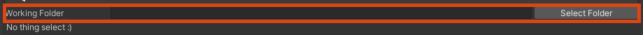
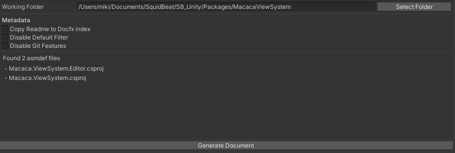
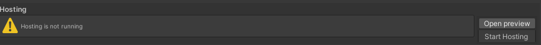

UnityDocGenerator
A helper to make docfx based document in Unity3D
Features
- Document generate based on Docfx in Unity3D
- Generate document depend on Unity Assembly definitions (.asmdef) files.
- Document web preview hosting in Unity3D.
- Tested on Windows Editor, OSX Editor.
Pre-requisites
UnityDocGenerator require the package manager ui extension mechanism, which is available from version 1.9.3 or later, or remove PackageManager/DocGeneratorPackageManagerExtension.cs to break the Package Manger UI supportion.
Installtion
Add the following line to Packages/manifest.json:
"com.macacagames.docgenerator": "https://github.com/MacacaGames/UnityDocGenerator.git",
UnityDocGenerator use LitJson, so add make sure LitJson in your project.
Or using UPM package to install LitJson. (This is a third party package)
"com.ms.litjson":"https://github.com/wlgys8/LitJsonUPM.git",
Environment Setup
macOS, Linux
Make sure Mono Framework runtime is installed in your computer. Download Here
Windows
Make sure MSBuild >= 1.5 is installed in your computer. One of the easiest way is Install the Visual Studio >= 2013. Get Visual Studio
Getting Started
1. Open Editor
- Option 1 (recommend): You can press the Open with Unity Doc Generator button on an installed packages to open the UnityDocGenerator.

- Option 2: In Project window you can use Assets Menu to open a folder directly by click Open with Unity Doc Generator (This method may not work corrrectly if the folder name contains the "." char)

- Option 3: Open the editor via Unity's toolbar, MacacaGames > UnityDocGenerator
2. Get the full path of your mono install.
macOS, Linux only! Windows user can skip this step.
which mono
If the Mono Framework is install correctlly, you may got the return like this.
/Library/Frameworks/Mono.framework/Versions/Current/Commands/mono
Then paste the value to the Mono Path field on Editor.

3. Select your working folder
Type the working folder path or use Select Folder select via dialog. (If the Editor is open via Option 1. or Option 2. the value will fill-up automatically)
UnityDocGenerator will find out all Unity Assembly definitions (.asmdef) files inside the folder (include all sub folder) as the DocFx target.
For example, the screeshot shows there will be 2 files set to DocFx target.
4. Generate!!
Click Generate Document and wait for the task complete. The Unity Editor may hangs during the docfx runing, it is normal and usually resume in 1 min (Based on your project size).
You can see the DocFx result in Unity Editor Console.

5. Hosting and preview (Optional)
You can preview you generated document via UnityDocGenerator. Click Start Hosting to enable hosting, navigate to http://127.0.0.1:18080/index to view your generated document.
Hosgint power by sableangle/UnityHTTPServer
6. Next Step?
Upload your document to your web server.
The Project is already optimized for Github Page, so you can just push and enable it on your repository.
Project Struction
UnityDocGenerator will generate two folders in your working folder. Only modify them if you understand what you're doing, eg.. more custom modify for docfx.
UnityDocGenerator use Document/docfx.json as the DocFx setting to generate document.
- root (The working folder you select)
- your sub folders...
- your files...
- Document (The DocFx project generate by UnityDocGenerator)
- docfx.json (DocFx setting file)
- other docfx project files...
- docs (The generated document root)
- udg_setting.json (The UnityDocGenerator setting file)
Troubleshooting
- Try to find the error message in Unity Editor Console.
- Make sure you Mono Framework is install correctlly.
- Open an issue on Github if there is any bug, and provide the project which reproduce the issue (if possiable).
- Linux Editor is supported in theory but not tested.
TODO
- More custom setting for docfx.